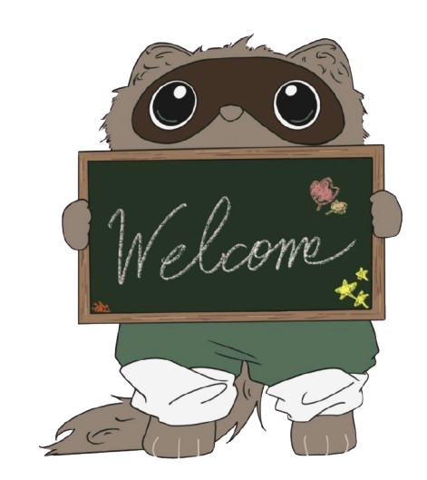
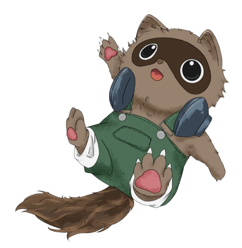

キャンフェス
Nishinomiya Kitaguchi
ごあいさつ
N高西宮北口キャンフェス２０２６
特設Webサイトをご覧いただきありがとうございます！
今年で3回目となるキャンフェスでは過去最多となる多彩な企画でお届けいたします
生徒それぞれの個性や発想を集結し、今日のために仲間と力を合わせた準備を進めてきました。
どの企画にも生徒たちの工夫と想いが詰まっています。
ご来場いただいた皆様にたくさんの笑顔と感動をお届けできるよう
キャンパス全体が一丸となってみなさまをお迎えします。
ぜひ存分にお楽しみください！
Themeテーマ
〜笑顔満祭〜
生徒もゲストも全員が楽しめるキャンフェス
にしたいという想いが込められています


Image Characterイメージキャラクター
たぬずみ
自認アライグマのたぬき
- 性格：
- 基本的に穏やかだが、まれに毒を吐く
- 好物：
- たこ焼き
- ルーティーン：
- たこ焼きのつまみ食い
- 住居：
- キャンパス長の頭上
（不在時はキャンパスの天井裏）
ほっぺを触るとニコニコします！
（機嫌が悪いと噛みつきます）
Map

企画
注意事項
会場内の販売スペースをご利用の際は、
あらかじめ受付にて専用金券をお買い求めください。
※金券は返金不可になります
金券を購入される際、お支払いは現金のみとなります
すべてのブースで写真撮影が可能ですが、
撮影した写真をSNS等へ投稿・公開することはご遠慮ください。
※ キャンフェスでは1部と2部で分かれて実施します
交代制となっていますのであらかじめご注意ください
TIME SCHDULE
1部
| 10:30 | 開場 |
|---|---|
| 10:45 | 開会式 |
| 11:00 | 1-2Switch |
| 11:05 | ラジオ |
| 11:40 | イントロクイズ |
| 12:15 | バンド |
| 12:50 | 終了 |
2部
| 13:25 | 開場 |
|---|---|
| 13:40 | 1-2Switch |
| 14:15 | ラジオ |
| 14:50 | イントロクイズ |
| 15:25 | バンド |
| 16:00 | 閉会式 |
| 16:15 | 終了 |
日時・場所
Googleマップ
場所：NSR高等学校西宮北口キャンパス阪急西宮ガーデンズ プラス館8階
阪急西宮北口駅から徒歩６分